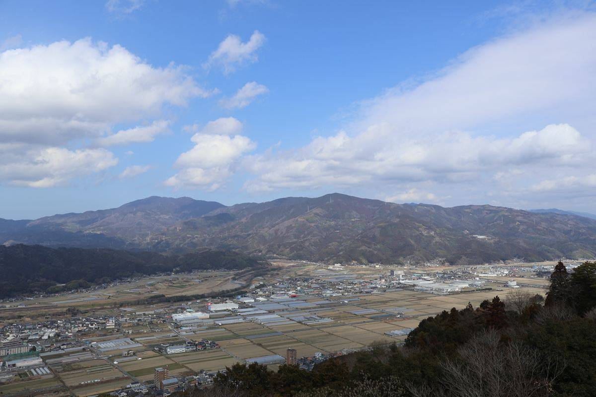

2026/04/03 ・ 大洲の視点 ・ 出典: 愛媛シルク公式サイト「大洲市 瀧本養蚕」
大洲に残る養蚕農家と成熟社会の今

出典・参考にした資料
大洲市 瀧本養蚕（愛媛シルク公式サイト） 愛媛県史 地誌Ⅱ（南予）「四 大洲盆地の蚕糸業」（データベース『えひめの記憶』愛媛県） 蚕糸業の現状について（一般財団法人大日本蚕糸会）かつては「養蚕のまち」だった
大洲は明治期以降、桑畑と製糸業で栄えた「養蚕のまち」だった。『愛媛県史 地誌Ⅱ（南予）』によると、 大正5年(1916年)に20工場だった愛媛県内の機械製糸工場は、大正12年(1923年)には40工場に増え、 そのうち31%が大洲地方に集まっていたという記録が残っている。
畑地に占める桑園の割合も、大正5年の県平均9.4%・大洲地方14.0%から、大正15年(1926年)には 県平均15.7%・大洲地方23.2%まで伸びていて、当時の大洲がどれだけ養蚕漬けの町 だったかが数字からも伝わってくる。(「機械製糸工場のおよそ3割」という割合はこの県史の記述に よるもので、愛媛シルク公式サイトには具体的な割合の記載はない。)
肱川流域は江戸時代から水害の多い土地だったが、桑の木は多少水に浸かっても枯れにくいため、 この地形で養蚕がとりわけ発達したとも言われている。
今は、1軒だけになった
そんな大洲の養蚕農家は、今では瀧本亀六さん・吉良さん兄弟の1軒だけになった。 それでも年間およそ2トンの繭を生産し、愛媛県内の繭生産量の6割ほどを占めている というから驚く。
実はこの「1軒だけ」という状況、大洲に限った話ではない。業界団体の資料によると、養蚕農家は 最盛期の1929年には全国で220万戸を超えていたが、2024年時点ではわずか 134戸まで減っている。 国内で消費される絹のうち国産生糸が占める割合は0.13%ほどで、いま身の回りにある 絹製品のほとんどが輸入品ということになる。そう考えると、瀧本さんたちの1軒が愛媛県内の繭生産量の6割を支えている というのは、国内でも数少ない「産地」の一つがまだ大洲に残っている、ということなのだと思う。
しかも、亀六さんの26歳のお孫さんが5代目として就農を始めたとのこと。 高齢化する養蚕農家の中では最年少の後継者だそうだ。
「稼げる・稼げない」だけでは語れない一次産業の担い手が、大洲にはまだ残っている。
効率だけを追えばとうに終わっていてもおかしくない産業が、家族の中で次の世代へ渡っていく姿を見ると、 「成熟社会」というのは何かを諦めることではなく、小さな規模のまま丁寧に続けていく選択肢もあるということ なんだろうなと思う。